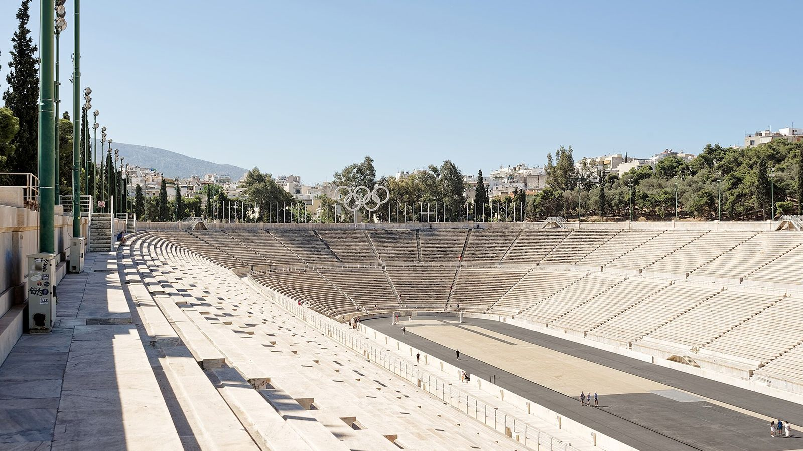

From racecourse to stadium
Races for the Panathenaic Games were held in this hollow between two hills long before there were seats. Around 330 BC the statesman Lykourgos built a proper stadium, and in AD 144 Herodes Atticus rebuilt it in marble.
The Kallimarmaro, "the beautiful marble", is the only stadium in the world built entirely of marble, and it hosted the first modern Olympic Games in 1896. Here's what you're looking at, and what to listen for as you walk in.

Races for the Panathenaic Games were held in this hollow between two hills long before there were seats. Around 330 BC the statesman Lykourgos built a proper stadium, and in AD 144 Herodes Atticus rebuilt it in marble.
After centuries buried, the stadium was excavated in 1869 and rebuilt in marble for the first modern Olympics in 1896, which opened and closed here. It returned in 2004 for the archery and the finish of the marathon.
The Olympic flame, lit at Olympia, is handed over to each host nation here, and the Athens Marathon finishes on this track every November.
Yes. It's the only stadium in the world built entirely of marble: first in AD 144, and again for the 1896 Olympics.
The first modern Olympic Games in 1896, which opened and closed here, and events of the 2004 Athens Olympics: archery and the marathon finish.
"Beautiful marble", the Athenians' nickname for the stadium.